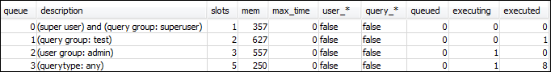
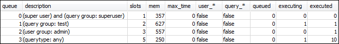

Terjemahan disediakan oleh mesin penerjemah. Jika konten terjemahan yang diberikan bertentangan dengan versi bahasa Inggris aslinya, utamakan versi bahasa Inggris.
Bagian 3: Merutekan kueri ke antrian berdasarkan grup pengguna dan grup kueri
Sekarang Anda memiliki cluster Anda terkait dengan grup parameter baru dan Anda telah mengkonfigurasi WLM. Selanjutnya, jalankan beberapa kueri untuk melihat bagaimana Amazon Redshift merutekan kueri ke antrean untuk diproses.
Langkah 1: Lihat konfigurasi antrian kueri dalam database
Pertama, verifikasi bahwa database memiliki konfigurasi WLM yang Anda harapkan.
Untuk melihat konfigurasi antrian kueri
-
Buka RSQL dan jalankan kueri berikut. Kueri menggunakan tampilan WLM_QUEUE_STATE_VW yang Anda buatLangkah 1: Buat tampilan WLM_QUEUE_STATE_VW. Jika Anda sudah memiliki sesi yang terhubung ke database sebelum cluster reboot, Anda perlu menyambung kembali.
select * from wlm_queue_state_vw;Berikut ini adalah contoh hasil.

Bandingkan hasil ini dengan hasil yang Anda terimaLangkah 1: Buat tampilan WLM_QUEUE_STATE_VW. Perhatikan bahwa sekarang ada dua antrian tambahan. Antrian 1 sekarang antrian untuk grup kueri pengujian, dan antrian 2 adalah antrian untuk grup pengguna admin.
Antrean 3 sekarang adalah antrean defaultnya. Antrian terakhir dalam daftar selalu antrian default. Itulah antrian yang query diarahkan secara default jika tidak ada kelompok pengguna atau kelompok query ditentukan dalam query.
-
Jalankan kueri berikut untuk mengonfirmasi bahwa kueri Anda sekarang berjalan dalam antrian 3.
select * from wlm_query_state_vw;Berikut ini adalah contoh hasil.

Langkah 2: Jalankan kueri menggunakan antrian grup kueri
Untuk menjalankan kueri menggunakan antrean grup kueri
-
Jalankan kueri berikut untuk merutekan ke grup
testkueri.set query_group to test; select avg(l.priceperticket*s.qtysold) from listing l, sales s where l.listid <40000; -
Dari jendela RSQL lainnya, jalankan kueri berikut.
select * from wlm_query_state_vw;Berikut ini adalah contoh hasil.

Query dialihkan ke kelompok query pengujian, yang antrian 1 sekarang.
-
Pilih semua dari tampilan status antrian.
select * from wlm_queue_state_vw;Anda melihat hasil yang mirip dengan berikut ini.

-
Sekarang, atur ulang grup kueri dan jalankan kueri panjang lagi:
reset query_group; select avg(l.priceperticket*s.qtysold) from listing l, sales s where l.listid <40000; -
Jalankan kueri terhadap tampilan untuk melihat hasilnya.
select * from wlm_queue_state_vw; select * from wlm_query_state_vw;Berikut ini adalah contoh hasil.


Hasilnya harus bahwa query sekarang berjalan dalam antrian 3 lagi.
Langkah 3: Membuat pengguna basis data dan grup
Sebelum Anda dapat menjalankan kueri dalam antrian ini, Anda perlu membuat grup pengguna dalam database dan menambahkan pengguna ke grup. Kemudian Anda masuk dengan RSQL menggunakan kredensi pengguna baru dan menjalankan kueri. Anda perlu menjalankan kueri sebagai superuser, seperti pengguna admin, untuk membuat pengguna database.
Untuk membuat pengguna basis data baru dan grup pengguna
-
Dalam database, membuat pengguna database baru bernama
adminwlmdengan menjalankan perintah berikut di jendela RSQL.create user adminwlm createuser password '123Admin'; -
Kemudian, jalankan perintah berikut untuk membuat grup pengguna baru dan tambahkan
adminwlmpengguna baru Anda ke dalamnya.create group admin; alter group admin add user adminwlm;
Langkah 4: Jalankan kueri menggunakan antrean grup pengguna
Selanjutnya Anda menjalankan kueri dan merutekan ke antrian grup pengguna. Anda melakukan ini ketika Anda ingin merutekan kueri Anda ke antrian yang dikonfigurasi untuk menangani jenis kueri yang ingin Anda jalankan.
Untuk menjalankan kueri menggunakan antrean grup pengguna
-
Di jendela RSQL 2, jalankan query berikut untuk beralih ke
adminwlmaccount dan menjalankan query sebagai pengguna itu.set session authorization 'adminwlm'; select avg(l.priceperticket*s.qtysold) from listing l, sales s where l.listid <40000; -
Di jendela RSQL 1, jalankan query berikut untuk melihat antrian query yang query diarahkan ke.
select * from wlm_query_state_vw; select * from wlm_queue_state_vw;Berikut ini adalah contoh hasil.

Antrian yang dijalankan kueri ini adalah antrian 2, antrian
adminpengguna. Kapan pun Anda menjalankan kueri yang masuk sebagai pengguna ini, mereka berjalan dalam antrian 2 kecuali Anda menentukan grup kueri yang berbeda untuk digunakan. Antrian yang dipilih tergantung pada aturan penugasan antrian. Untuk informasi selengkapnya, lihat Aturan penetapan antrian WLM. -
Sekarang jalankan query berikut dari jendela RSQL 2.
set query_group to test; select avg(l.priceperticket*s.qtysold) from listing l, sales s where l.listid <40000; -
Di jendela RSQL 1, jalankan query berikut untuk melihat antrian query yang query diarahkan ke.
select * from wlm_queue_state_vw; select * from wlm_query_state_vw;Berikut ini adalah contoh hasil.

-
Setelah selesai, atur ulang grup kueri.
reset query_group;